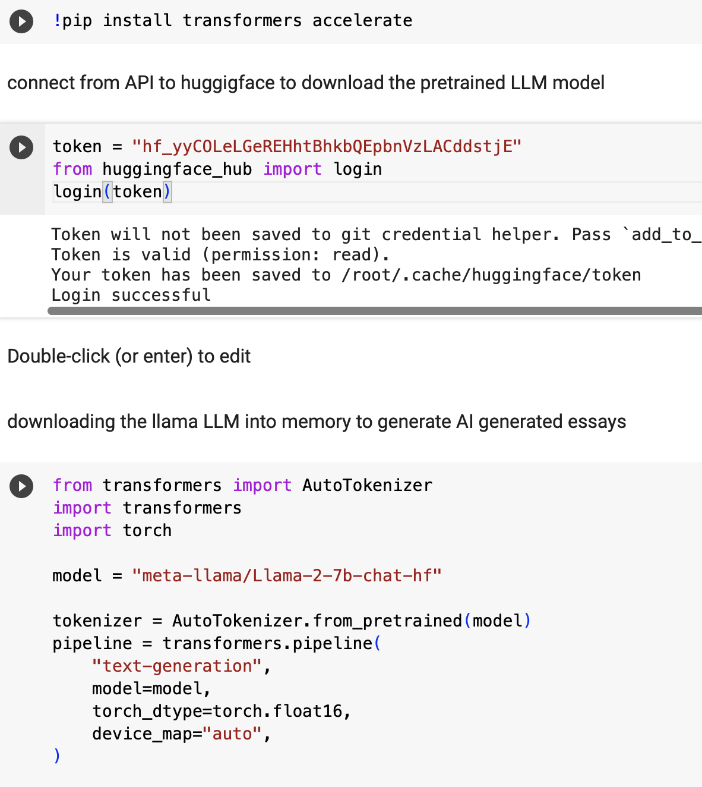
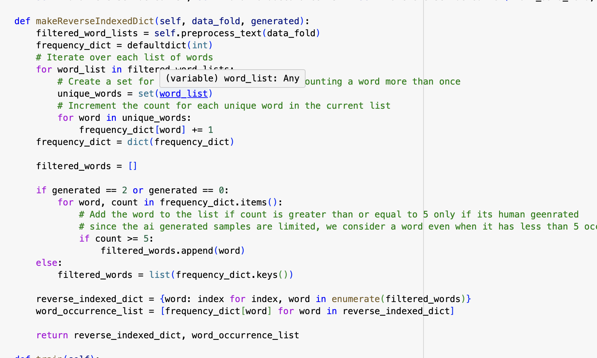
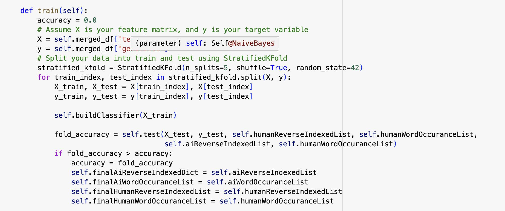

Building a Naive Bayes Classifier for Essay Classification
In this blog post, we delve into the process of building a Naive Bayes classifier for essay classification. The task involves distinguishing between essays generated by humans and those generated by an AI language model.
Methodology
The dataset initially lacked a sufficient number of AI-generated essays, posing a challenge. To address this, data augmentation was performed by generating medium-sized essays (100 words) using the Lama LLM model from Hugging Face in a Colab environment. Due to the memory limitations of Colab, an upgrade to Colab Pro (32 GB RAM) was necessary for generating additional essays using prompts from existing training samples.
 Model Construction
The Naive Bayes classifier was trained using a stratified k-fold approach, with features extracted through tokenization and stemming. The model leverages Laplace smoothing for better generalization and predicts whether an essay is human-generated or AI-generated based on word occurrences.
Reverse-Indexed Dictionary and Word Occurrence Lists
Central to the Naive Bayes classifier is the use of a reverse-indexed dictionary and word occurrence lists. These components play a crucial role in calculating the likelihood of an essay belonging to a particular class.

Reverse-Indexed Dictionary: The reverse-indexed dictionary maps words to unique indices, facilitating efficient lookup during probability calculations. Each word in the dictionary is associated with a specific index, streamlining the process of retrieving relevant information during model training and prediction.
Word Occurrence Lists: These lists maintain the occurrence count of each word in the dataset. For both human-generated and AI-generated essays, the frequency of words is recorded. During classification, these lists contribute to the probability calculation, allowing the model to discern the significance of each word in determining the class of an essay.
The use of a reverse-indexed dictionary and word occurrence lists enhances the classifier's ability to generalize and make informed predictions. It provides a structured representation of the dataset, enabling efficient computation of class probabilities based on the presence of specific words in an essay.
Training and Evaluation
The training process involved experimenting with different folds and selecting the model with the highest accuracy. The final model parameters were saved for future predictions. The evaluation metric used was accuracy, measuring the classifier's ability to correctly predict the class of essays.
Conclusion
Building a Naive Bayes classifier for essay classification is a challenging yet rewarding task. The methodology, including data augmentation and model training, contributes to the effectiveness of the classifier in distinguishing between human and AI-generated essays.
Additional Points
- The dataset augmentation process was essential due to the insufficient number of AI-generated essays in the initial dataset.
- Generating essays using the Lama LLM model in a Colab environment required careful management of RAM, leading to an upgrade to Colab Pro for increased memory.